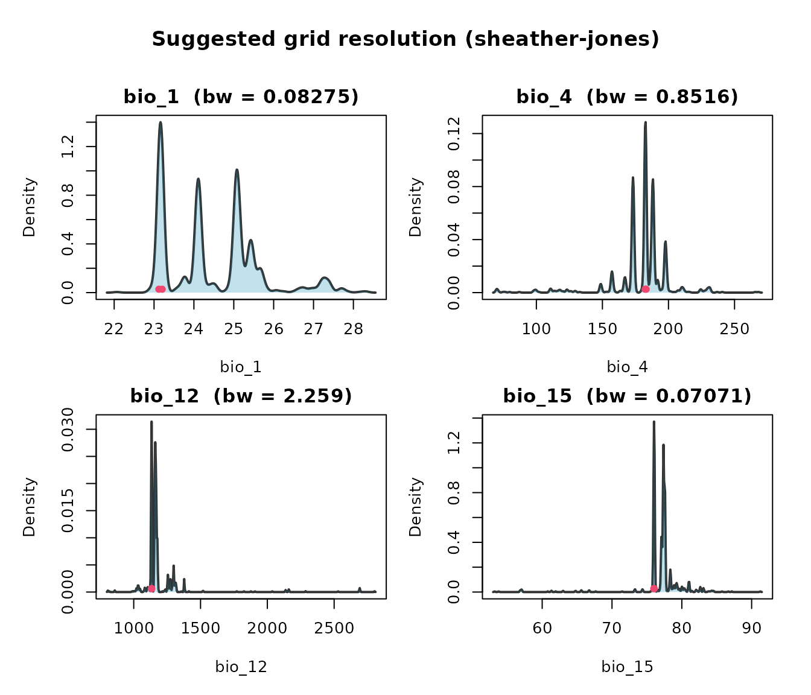
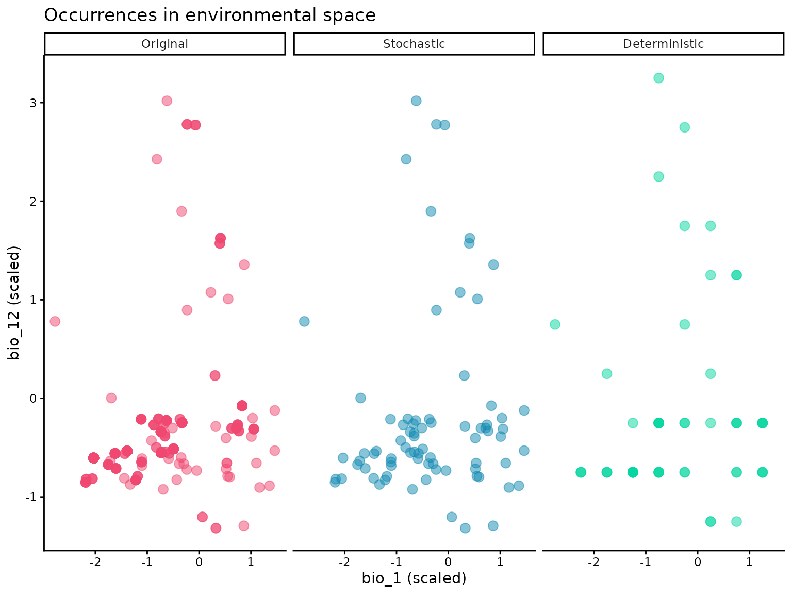
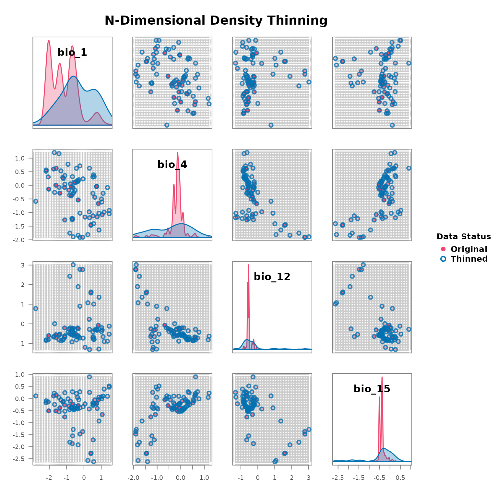

library(bean)
data(origin_dat_prepared, package = "bean")
env_vars <- c("bio_1", "bio_4", "bio_12", "bio_15")Choosing an objective grid resolution
The intuition
A grid cell is the unit of “redundancy” in environmental space. If two occurrences sit in the same cell, the package treats them as carrying the same environmental information and keeps only one. Pick the cell too small, and almost every point survives — thinning does nothing. Pick it too large, and you wipe out genuine ecological variation. We need a data-driven choice that sits between those two extremes.
Why a kernel-density bandwidth?
A kernel density estimator (KDE) replaces every observation with a small “bump” of width h (the bandwidth) and adds the bumps together to estimate the probability density of the variable. The bandwidth is the scale at which the estimator stops resolving individual points and starts producing a smooth curve. Operationally:
- features finer than h are treated as sampling noise,
- features coarser than h are treated as real density structure.
That is exactly the dividing line a thinning grid should respect, so
find_env_resolution() uses h (computed
independently per variable) as the suggested edge length of each
cell.
Which selector?
Three selectors with established statistical properties are available
via the method argument:
Sheather–Jones plug-in (
"sheather-jones", the default) — solves an equation for the bandwidth that minimises the asymptotic mean integrated squared error of the density estimate. It uses the data itself (rather than a Gaussian assumption) to estimate the curvature of the unknown density, and is the modern standard recommendation (Sheather & Jones, 1991; Jones, Marron & Sheather, 1996).Silverman’s rule of thumb (
"silverman") — the closed form Cheap, stable, and a good fallback. Uses the IQR-based scale to resist mild outliers, but assumes the underlying density is approximately Gaussian. Tends to over-smooth multimodal data (Silverman, 1986).Scott’s rule (
"scott") — the closed form Optimal when the density is exactly Gaussian; otherwise less defensible than the other two (Scott, 1992).
All three rules shrink at the canonical rate : more data buys you a finer resolution, but only slowly. This is the right behaviour for SDM data — doubling your sample size should let you see slightly finer structure, not arbitrarily finer.
Computing the resolution
res <- find_env_resolution(
data = origin_dat_prepared,
env_vars = env_vars,
method = "sheather-jones"
)
res
#> --- Bean environmental grid resolution ---
#> Bandwidth selector: sheather-jones
#>
#> variable resolution
#> bio_1 0.056162684
#> bio_4 0.013438324
#> bio_12 0.004615848
#> bio_15 0.006501067Visualising the bandwidth
Each panel below shows the per-variable kernel density. The red bar at the bottom of each panel has length equal to the chosen bandwidth — the cell width that will be used for thinning.
plot(res)
Sensitivity to the selector
It’s worth checking that the three rules give comparable answers; if they don’t, the data is far from Gaussian and you may want to inspect the densities yourself.
sapply(c("sheather-jones", "silverman", "scott"), function(m) {
find_env_resolution(origin_dat_prepared, env_vars, method = m)$suggested_resolution
})
#> sheather-jones silverman scott
#> bio_1 0.056162684 0.17981503 0.21178215
#> bio_4 0.013438324 0.03959521 0.04663436
#> bio_12 0.004615848 0.01530801 0.01802943
#> bio_15 0.006501067 0.02394656 0.02820372Stochastic thinning
thin_env_nd() randomly retains exactly one occurrence
per occupied grid cell. A seed makes the selection
reproducible without disturbing the global random state.
thinned_stochastic <- thin_env_nd(
data = origin_dat_prepared,
env_vars = env_vars,
grid_resolution = res$suggested_resolution,
seed = 1
)
thinned_stochastic
#> --- Bean Stochastic Thinning Results ---
#>
#> Thinned 1024 original points to 78 points.
#> This represents a retention of 7.6% of the data.
#>
#> --------------------------------------Deterministic thinning
thin_env_center() replaces each occupied cell with a
single point at the geometric centre of the cell — no randomness
involved.
thinned_deterministic <- thin_env_center(
data = origin_dat_prepared,
env_vars = env_vars,
grid_resolution = c(0.5, 0.5, 0.5, 0.5)
)
thinned_deterministic
#> --- Bean Deterministic Thinning Results ---
#>
#> Thinned 1024 original points to 56 unique grid cell centers.
#> This represents a retention of 5.5% of the data.
#>
#> --------------------------------------Comparing the two thinned datasets
library(ggplot2)
plot_compare <- rbind(
data.frame(origin_dat_prepared[, env_vars], Status = "Original"),
data.frame(thinned_stochastic$thinned_data[, env_vars], Status = "Stochastic"),
data.frame(thinned_deterministic$thinned_points[, env_vars], Status = "Deterministic")
)
plot_compare$Status <- factor(plot_compare$Status,
levels = c("Original", "Stochastic", "Deterministic"))
ggplot(plot_compare, aes(bio_1, bio_12, colour = Status)) +
geom_point(alpha = 0.5, size = 3) +
facet_wrap(~Status, nrow = 1) +
scale_colour_manual(values = c(Original = "#ef476f",
Stochastic = "#118ab2",
Deterministic = "#06d6a0"),
guide = "none") +
theme_classic() +
labs(title = "Occurrences in environmental space",
x = "bio_1 (scaled)", y = "bio_12 (scaled)")
The stochastic plot preserves actual observations (one per cell), so its points reflect the empirical distribution within each cell. The deterministic plot replaces each cell’s observations with the cell’s centre, so its points sit on a regular lattice.
Pairs view with plot_bean()
plot_bean(
original_data = origin_dat_prepared,
thinned_object = thinned_stochastic,
env_vars = env_vars
)
plot_bean(
original_data = origin_dat_prepared,
thinned_object = thinned_deterministic,
env_vars = env_vars
)The next vignette uses these two thinned datasets to fit niche ellipsoids and project suitability across the landscape.